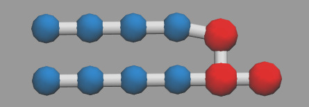
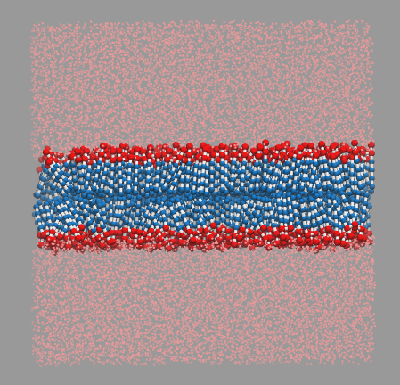
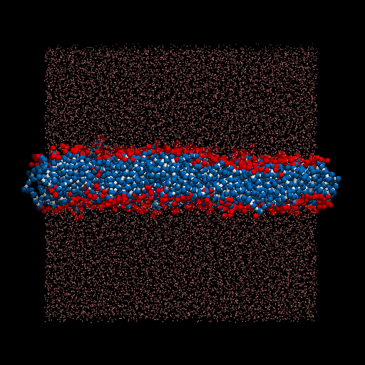

I perform a test dpd simulation of membrane started from the generation of structures. packmol is used for generate the input structure. lammps is used as the simulator.
The lipid structure is as follow(lipid.xyz):
11
C 0.0 0.0 0.0
C 0.5 0.0 0.0
C 1.0 0.0 0.0
C 1.5 0.0 0.0
C 0.0 0.6 0.0
C 0.5 0.6 0.0
C 1.0 0.6 0.0
C 1.5 0.6 0.0
H 2.0 0.0 0.0
H 2.0 0.5 0.0
H 2.5 0.0 0.0
which is like the pic shown below.

also a water sturcture is listed(water.xyz). Because only one particle will represent one water.
1
W 0.0 0.0 0.0
a packmol input(bilayer_packmol.in) script is used here to generate the structure of the total system.
tolerance 0.5
filetype xyz
output bilayer.xyz
structure lipid.xyz
number 250
inside box 0. 0. 10. 19.428 19.428 13.0
atoms 1
below plane 0. 0. 1. 10.5
end atoms
atoms 11
over plane 0. 0. 1. 12.5
end atoms
end structure
structure lipid.xyz
number 250
inside box 0. 0. 7.0 19.428 19.428 10.0
atoms 1 5
over plane 0. 0. 1. 9.5
end atoms
atoms 11
below plane 0. 0. 1. 7.5
end atoms
end structure
structure water.xyz
number 8250
inside box 0. 0. 12.5 19.428 19.428 19.428
end structure
structure water.xyz
number 8250
inside box 0. 0. 0. 19.428 19.428 7.5
end structure
And also I have a script for the generation of psf and lammps data file.
mol new bilayer.xyz
pbc set { 19.428 19.428 19.428 }
topo clearbonds
for {set i 0} {$i < 500} {incr i} {
topo addbond [expr $i*11] [expr $i*11+1]
topo addbond [expr $i*11+1] [expr $i*11+2]
topo addbond [expr $i*11+2] [expr $i*11+3]
topo addbond [expr $i*11+4] [expr $i*11+5]
topo addbond [expr $i*11+5] [expr $i*11+6]
topo addbond [expr $i*11+6] [expr $i*11+7]
topo addbond [expr $i*11+3] [expr $i*11+8]
topo addbond [expr $i*11+7] [expr $i*11+9]
topo addbond [expr $i*11+8] [expr $i*11+9]
topo addbond [expr $i*11+8] [expr $i*11+10]
topo addangle [expr $i*11] [expr $i*11+1] [expr $i*11+2]
topo addangle [expr $i*11+1] [expr $i*11+2] [expr $i*11+3]
topo addangle [expr $i*11+2] [expr $i*11+3] [expr $i*11+8]
topo addangle [expr $i*11+4] [expr $i*11+5] [expr $i*11+6]
topo addangle [expr $i*11+5] [expr $i*11+6] [expr $i*11+7]
topo addangle [expr $i*11+6] [expr $i*11+7] [expr $i*11+9]
}
animate write psf bilayer.psf
topo writelammpsdata bilayer.data
The final version of the input structure is showed as follow

I use this structure for the input of DPD simulation, and the input file for lammps is as follow.
The input files: bilayer.data, dpd_test.in
units lj
atom_style full
comm_modify vel yes
pair_style dpd 1.0 1.0 34387
read_data bilayer.data
# create simulation box
#lattice fcc 3
#region mybox block -4 4 -4 4 -4 4 units lattice
#create_box 1 mybox
#create_atoms 1 box
# define masses and interaction coefficient
#mass * 1
pair_coeff 1 1 10 4.5
pair_coeff 2 2 30 4.5
pair_coeff 3 3 25 4.5
pair_coeff 1 2 35 4.5
pair_coeff 1 3 75 4.5
pair_coeff 2 3 30 4.5
bond_style harmonic
bond_coeff 1 128.0 0.5
angle_style cosine/delta
angle_coeff 1 7.5 180.0
# create initial velocities
velocity all create 1.0 4928459 dist gaussian
# change neighbor list parameters to avoid dangerous builds
neighbor 2.0 bin
neigh_modify delay 3
# specify simulation parameters
timestep 0.04
thermo 10
# first equilibrate the initial condition
fix 1 all nve
run 500
dump traj all xtc 50 traj.xtc
dump_modify traj unwrap yes
dump traj_xyz all xyz 50 traj.xyz
# production run
run 50000
The result movie is shown as below
